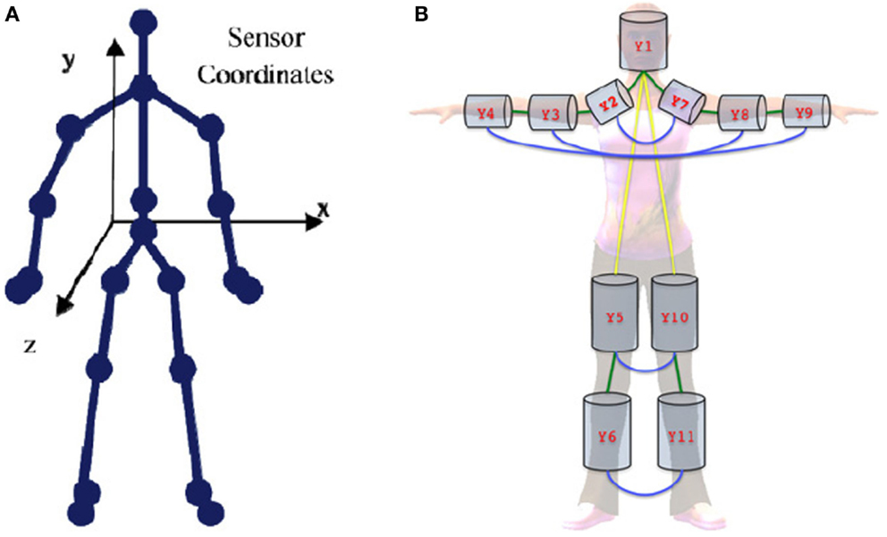

Date: 2025-04-22
 from A Review of Human Activity Recognition Methods, from Frontiers in Robotics and AI
Minority Report (2002 film)
Recent promo Video from Oblong (Underkoffler was the lead for designing the speculative system for Minority Report)
Paper Signals is an experiment that explores how physical things can be controlled with voice. –source: Experiments with Google
Project Oasis is a self-sustaining plant ecosystem that reflects outside weather patterns by creating clouds, rain, and light inside a box. You can talk to it using the Google Assistant and ask it to create certain conditions or show you the weather in a specific place. This experiment expands our conversation with technology and the natural world.
A recent focus of our lab has been making use of Tangible Displays and Body Object Space to develop new assistive technologies. As a test case, we prototyped the Mario side-scrolling game for visually impaired users, using body movement analogies to control Mario in the game. –Kallirroi Retzepi at MIT Media Lab
We built an immersive talk radio experience, where you can fly over America and select talk-radio stations to listen to live. The experience gives you an astronaut’s view of the Earth, while at the same time allowing you to be immersed in multiple channels of talk-radio. While listening to stations, we realized that there were many subjects that were heavily discussed in talk-radio shows which we had never heard of. We also overlayed information about congressional districts and how they voted in the 2008, 2012, and 2016 election. By selecting a station, you could also see who the congress-people for that district are.
ClickHere is a Chrome plugin that automatically transforms a web page to an abstract attentional tapestry. The project takes on an interface critique standpoint by asking the following questions: how do our habitual online spaces transform themselves when reduced to only a few building blocks? More specifically, what does a browser window look like when all attention-hungry elements are emphasized?
available in the Chrome Extensions - chrome web store
– Kallirroi Retzepi
by Elena Lee Gold
by Sean Montgomery (Founder EmotiBit), Conor Russomanno (CEO and Co-Founder Open BCI), Heidi Boisvert (Director of Emerging Media Technology at CUNY), Guillermo Bernal (MIT Media Lab, Fluid Interfaces)
Electrical and chemical signals are constantly traveling throughout our brains and bodies, carrying sensations, thoughts, emotions and our reactions to the world around us. Studying these signals and how they are altered by external stimuli and internal contexts gives us a window into ourselves and how we can enhance our health, well-being, and capabilities in the 21st century. Using open-source tools like Processing, EmotiBit, and OpenBCI and XTH we will discuss how sensing signals from the body can be used in research, education, art, DIY projects and, perhaps, to alter the future of human cognition.
Intro: How Computer Vision Works - Google
Object Detection: How computers learn to recognize objects instantly | Joseph Redmon
Image classification vs object detection
Lee’s Hands-on-Head demo of image recognition/classification
“Where typical design takes a look at small issues, speculative design broadens the scope and tries to tackle the biggest issues in society.” –Anthony Dunne and Fiona Raby, Speculative Everything: Design, Fiction, and Social Dreaming
Rather than look just at issues of today, speculative design thinking asks “How can we address future challenges with design?”
Propose a speculative user interface for an application. Throughout the course of the project you will propose a concept idea and design brief, create prototypes, test, and document and present.
Your idea can be practical or fanciful, surprising or challenging. It is an experimental interface, pointing forward to a new future.
Keep in mind our design and prototyping processes we’ve covered throughout the semester. You may have to improvise your own new approach for your speculative interface.
Consider our readings and learning from throughout the semester including but not limited to: the early history of early interface design, interface metaphors of the desktop, ergonomics, graphical interfaces, accessibility, voice control, speculative thinking.
For next week, turn in a Design Brief including: - a. concept stated in a short paragraph. How does it work? What is it for? - b. list of sources - ideas, writing, concepts that are informing your design work (can also include science fiction, games, articles, movies) - c. image references from these sources aka ‘mood board’ or inspiration - d. sketches (paper/pen and/or digital) - e. flowchart of interface - textual and/or visual - f. list of resources (starter code, library, underlying technology)